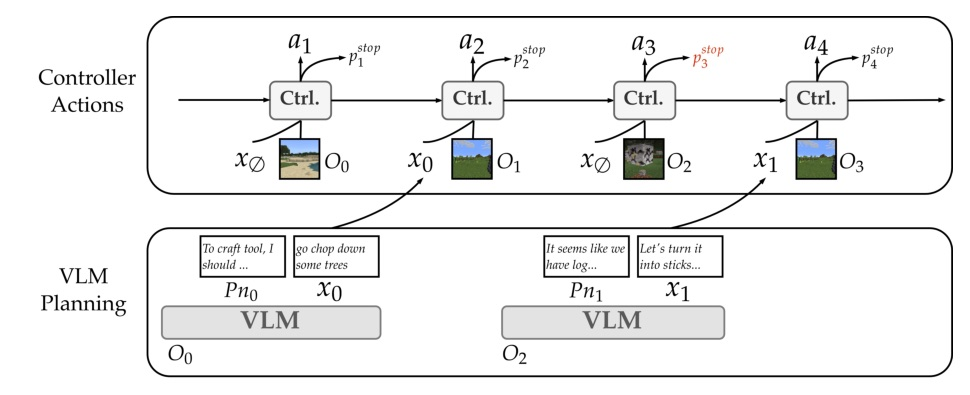
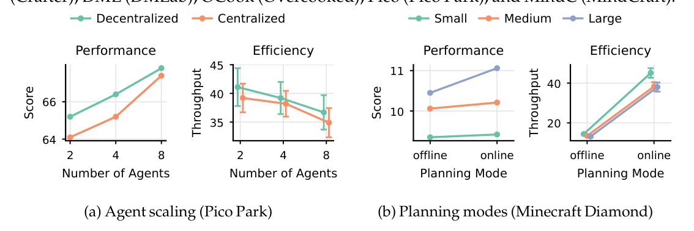
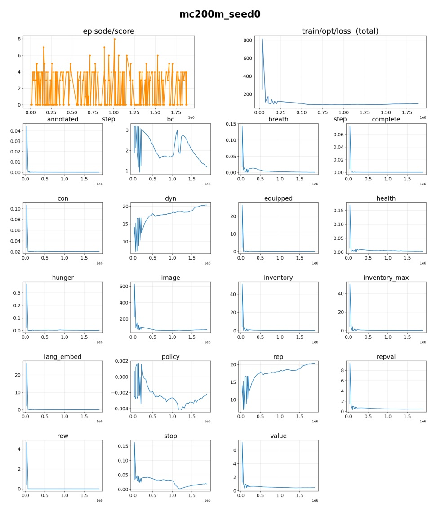

把 slow VLM planning 和 fast world-model control 分開：VLM 只產生稀疏語言指令，controller 以控制頻率執行。
這篇的核心不是「讓 VLM 直接操控」，而是把 VLM 降成 planner，把低延遲動作交給可訓練的 controller。

真正的效率增益來自 時間解耦：VLM latency 只影響「下一個高階指令」，不再影響「每一步控制」。
| Method | Atari | MC-Dia | Crafter | DML | MindC |
|---|---|---|---|---|---|
| Ours + GPT-4o | 891 | 11.7 | 14.1 | 76 | 70.2 |
| Ours + Qwen-VL-2.5-72B | 878 | 11.1 | 13.4 | 77 | 58.5 |
| GPT-4o w/o controller | 670 | 10.4 | 8.7 | 56 | 50.2 |
| Controller-only | 809 | 8.2 | 12.6 | 67 | 40.0 |
| DreamerV3 | 811 | 8.6 | 10.5 | 65 | - |
表中只摘單智能體與 MindCraft 核心欄位；完整 Table 1 還含 Overcooked / Pico Park。

| Environment | Online steps/s | Offline steps/s | Gain | Staleness mean |
|---|---|---|---|---|
| Minecraft Diamond | 37.5 | 13.4 | 2.8x | 51.2 steps |
| Overcooked | 169.9 | 92.7 | 1.8x | 165.1 steps |
| Train-time instruction type | Diamond score |
|---|---|
| Environment-derived labels | 11.4 |
| VLM-generated | 11.1 |
| Template-based instructions | 9.9 |
| Clustered action labels | 8.9 |
| Random strings | 8.3 |
| No instructions | 8.2 |
| Annotator → Eval | Gemma | Qwen | GPT |
|---|---|---|---|
| Gemma | 9.6 | 9.2 | 10.2 |
| Qwen | 9.7 | 9.9 | 9.9 |
| GPT | 9.8 | 9.6 | 10.0 |
| Planner | Fixed cadence | Fully VLM-controlled | VLM proactiveness |
|---|---|---|---|
| Gemma | 8.86 | 9.89 | 10.12 |
| Qwen | 9.32 | 10.12 | 10.23 |
| GPT-4o | 9.60 | 10.52 | 10.75 |
Minecraft Diamond；VLM-decided proactiveness 使用 uncertainty threshold 且 minimum gap 32 steps。
| Controller architecture | Diamond score |
|---|---|
| Transformer world model | 11.2 |
| Dreamer-V3-style RSSM (ours) | 11.0 |
| Value-only world model | 10.2 |
| RNN policy (model-free) | 9.7 |
| Task | Gemma | Qwen | GPT-4o |
|---|---|---|---|
| Minecraft Diamond | 193/200 | 190/200 | 194/200 |
| Pico Park | 186/200 | 180/200 | 189/200 |
| Atari | 181/200 | 172/200 | 185/200 |
常見失敗來自 “explore a bit more” 這類 vague / underspecified instructions。
| Method | Throughput |
|---|---|
| Instruct-to-Act (Qwen-2.5-VL-72B) | 31.7 |
| JARVIS-1 | 26.0 |
| LS-Imagine | 23.7 |
| DEPS | 20.5 |
| RT-2 | 16.2 |

如果要做可落地的 agent system，這篇提醒的是：把 interface 做薄，不要讓 foundation model 卡在控制迴路最內層。
The VLM planner plans and issues instructions concurrently with low-level execution, without the need for finetuning.
VLM planner 在低階控制執行的同時規劃並發出指令，不需要 fine-tuning。Intro p.2
We annotate intervals covering 50% of the buffer, leaving the remaining unannotated so that the controller also learns to act autonomously from the environment reward R.
只標註 replay buffer 的 50% 區間，其餘保留未標註，讓 controller 也能從環境 reward 學到自主行動。§3.4 p.5
Using GPT-4o to generate sparse instructions executed by a trained controller, rather than directly producing low-level actions, improves performance on every task.
讓 GPT-4o 產生稀疏指令並交給訓練過的 controller 執行，而不是直接產生低階動作，在所有任務上都提升表現。§4.3 p.6
Online planning achieves 2.8× higher throughput on Minecraft Diamond and 1.8× on Overcooked.
online planning 在 Minecraft Diamond 達到 2.8x throughput，在 Overcooked 達到 1.8x。A.6 p.17
Planner-level coordination failure dominates: 96 of 100 failure windows show near-duplicate sub-task assignments...
主要失敗不是 controller，而是 planner 協調：100 個失敗窗口中有 96 個出現近似重複的子任務分派。A.7 p.17
週日：火爆 GitHub Repo 或公司技術報告